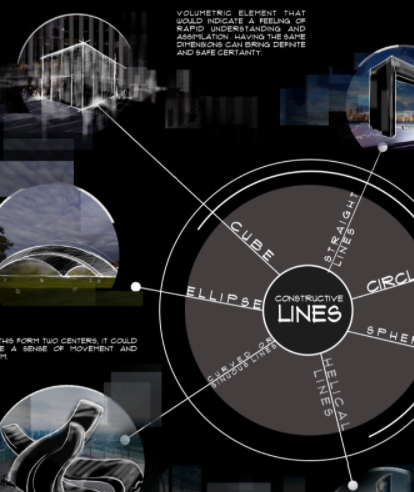

Posters | Sensory Experience
Posters aren't eligible for credit

Melissa Marsh

Lorí Crízel
View Video


Andrea Ribeiro Gomes

John Shoaff


Hanna Negami, Colin Ellard
View Video

Paolo Presti, Davide Ruzzon, Stefano Lenzi, Fausto Caruana, Giacomo Rizzolatti, Pietro Avanzini, and Giovanni Vecchiato
Anat Mor-Avi
View Video